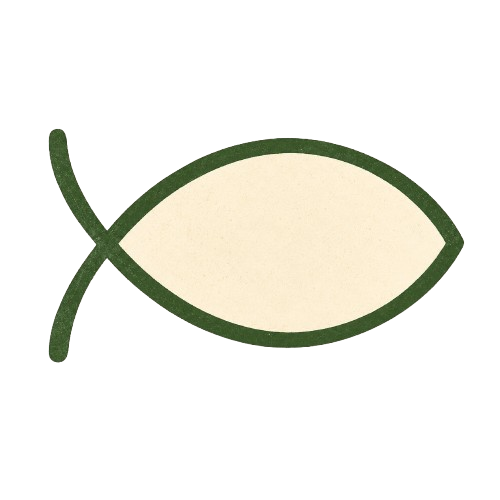

.png)
01 · SCHOOL VISITS
Classroom visits
Live-animal lessons about care, behavior, life cycles, stewardship, and the wonder of God's creation.
Request a school eventAngel Floyd brings live farm animals, practical lessons, and memorable hands-on learning to schools, churches, and community groups near Grant, Michigan.
Each visit is planned around the host's age group, setting, and goals. Angel handles the lesson and animal presentation; the host receives a clear plan before the event.
Live-animal lessons about care, behavior, life cycles, stewardship, and the wonder of God's creation.
Request a school event
Hands-on animal programs for churches, VBS, camps, and schools that connect animal care, stewardship, and Scripture.
Discuss a church programSeasonal nature walks, farm activities, field trips, and practical learning experiences for like-minded homeschool families.
Join the interest listHomeGrown Learning has brought amazing animal enrichment experiences to students of all ages at Bishop Baraga Academy. Angel brings the program right into our building and handles everything, making it easy for us to offer a memorable learning experience. This past May, they also taught us how to hatch chicks. Watching the chicks emerge became one of the most talked-about experiences of the year—for students and teachers alike!
Home Grown Learning brought their amazing farm animals to our church’s annual community‑wide event, and the kids were all smiles! They loved petting the animals, asking questions, and learning all about farm life. It quickly became one of the day’s biggest hits — and we’re already looking forward to having them back again next year.
See how a visit comes together, book a planning call with Angel, or send a complete event request.
.png)